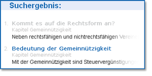

Benutzung
Lizenz
Nach der Installation auf Ihrem Rechner ist Vereine & Steuern für Sie kostenfrei, unterliegt jedoch uneingeschränkt dem Schutz des Urheberrechtsgesetzes. Es ist insbesondere untersagt, ohne schriftliche Genehmigung des Urhebers den Inhalt vollständig oder auszugsweise zu vervielfältigen, zu reproduzieren, weiterzugeben, neu zu veröffentlichen, zum Herunterladen bereitzustellen, anzuzeigen, bekannt zu machen oder zu übertragen.
Die Einstellung in ein lokales Netzwerk ist Ihnen erlaubt, jedoch ist es Ihnen nicht erlaubt, die Datensammlung in Netzwerke einzustellen, auf die von außerhalb zugegriffen werden kann bzw. von außerhalb Ihres Netzwerkes auf Vereine & Steuern zu verlinken. Die Einstellung ins Internet, auch auf Ihren eigenen Webspace ist Ihnen nicht gestattet.
Haftungsausschluss
Für etwaige Schäden an Hard- oder Software, die durch die Benutzung dieser Datensammlung entstehen sollten, ist jedwede Haftung ausgeschlossen.
Installation
Vereine & Steuern muss nicht mit einer Installationsroutine in Ihrem System installiert werden. Entpacken (extrahieren) Sie das ZIP-Archiv in ein Verzeichnis Ihrer Wahl. Hierzu starten Sie den Extrahier-Assistent Ihres Betriebssystems. Das ZIP-Archiv verbleibt dabei in der Regel an dem Ort des Downloads und kann gelöscht werden.
Sie sollten die Datenstruktur nicht verändern, Daten löschen oder verändern und auch keine anderen Daten in die Verzeichnisstruktur speichern, da es sonst unweigerlich zu Funktionsstörungen bis hin zur Unbrauchbarkeit kommen wird.
Deinstallation
Vereine & Steuern führt keine Einträge in Ihrem Betriebssystem aus. Zur Deinstallation löschen Sie einfach den gesamten Mantelordner Vereine & Steuern.
Starten
Vereine und Steuern starten Sie mit einem Doppelklick auf die Datei "index.html". Vereine und Steuern startet dann in Ihrem Standarsbrowser
Sind auf Ihrem Rechner mehrere Browser installiert, Sie möchten aber die Datensammlung mit einem anderen als Ihr Standarsbrowser anzeigen, starten Sie zunächst den Browser Ihrer Wahl und öffnen dann erst die Datei "index.html"
Anforderungen an den Web-Browser
Diese Datensammlung ist zur Anzeige mit modernen Webbrowsern, plattformunabhängig entwickelt und programmiert worden.
„Vereine & Steuern“ verwendet Frames und JavaScript zum Anzeigen von Themen. Wenn Sie Probleme beim Anzeigen von oder beim Bewegen durch Themen haben, sollten Sie überprüfen, ob Ihr Webbrowser den Mindestanforderungen entspricht.
So zeigen Sie die Themen ordnungsgemäß an:
Ihr Browser sollte ohne Einschränkungen Webstandards wie HTML5 und CSS3 unterstützen. Verwenden Sie deshalb mindestens z. B. Mozilla Firefox 4 oder höher, Safari 5.1.7. oder höher, MS Internet Explorer 10. Benutzer von älteren Browsern haben möglicherweise nur einen eingeschränkten Anzeigekomfort. Betriebssystemabhängig können Abweichungen von unserer Empfehlung möglich sein.
Aktivieren Sie JavaScript.
Wenn JavaScript in Ihrem Browser nicht aktiviert ist, können Sie Vereine & Steuern nicht anzeigen.
Ihr Browser sollte ebenfalls mit einem PDF-Plug-In ausgestattet sein um PDF-Dateien anzeigen zu können. Ist dies nicht der Fall, installieren Sie z. B. Acrobat Reader.
Wenn der Text aufgrund der Größe für Sie schwer lesbar ist, erhöhen Sie die Standardschriftgröße des Browsers oder zoomen Sie die Anzeige aus dem Menü Ansicht (Strg ++ bzw. Strg+-). Die meisten Browser bieten auch die Möglichkeit die ganze Seite oder nur den Text zu zoomen.
Die Suchfunktion
Vereine & Steuern ist mit einer JavaScript basierenden Suchfunktion ausgestattet, die es Ihnen erlaubt, die eingebundene Datenbank nach Begriffen zu durchsuchen.  Seiten, die Sie bereits besucht haben, werden im Ergebnisfenster grau dargestellt. Wenn Sie alle Suchergebnisse wieder als unbesucht darstellen wollen, löschen Sie bitte Ihren Browserverlauf (Chronik).Versionsnummer
Im Fußbereich einer jeden Seite wird Ihnen die Version Ihres Downloads angezeigt. Stellen Sie fest, dass im Servicebereich des Finanzministeriums NRW eine höhere Versionsnummer angeboten wird, laden Sie sich bitte die aktuelle Version herunter.